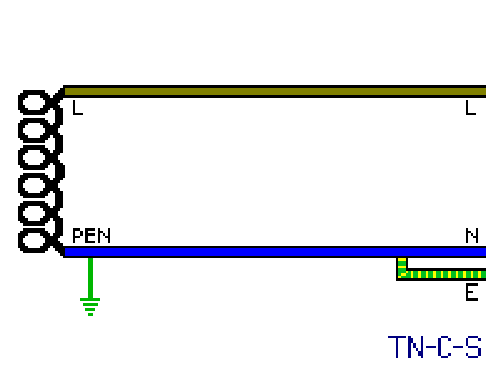

Wiring and power distribution
Wiring practices vary considerably between different countries, even within Europe. This page covers some of these differences, both on how power is distributed to an installation, as well as how wiring is done inside the installation itself.
Earthing systems
As mentioned previously, the protective earth (ground) is a crucial safety feature in an electrical installation, and thus mandatory in most countries around the world. However, the actual way an earthing system works can vary substantially, not just between different nations but even within the same country, with each system having a different set of pros and cons.
Classification of the different types of earthing arrangements is generally done using terminology set by the International Electrotechnical Commission (IEC); these are generally divided into three categories: TN, TT and IT. TN supplies (that is, ones where the neutral is physically connected to the earth conductor at some point) are then subsequently divided into more categories to specify the point at which this connection is made.
Note that in all of these systems, except for the IT one, the central point of the transformer is connected to an earth rod and thus becomes the neutral of the supply. In some countries this is referred to as the "zero" point as the neutral is at 0V with respect to earth.
{kind=link}
{kind=link}

TN-S supplies
In these supplies the provided by the electricity supplier in the form of a separate wire going all the way back to the transformer, where it is connected to the neutral. This system used to be quite common in older houses in the UK, where supply wires had a lead outer covering which was used as the protective earth (PE) conductor.
The main disadvantage of this system is the high cost, as an entirely separate wire must be supplied; however, it is also very safe, compared to TN-C and TN-C-S supplies.
TN-C supplies
With this style of earthing a combine neutral and earth (PEN) conductor is used, both for the roles of carrying the return current and for the protective earth. In a real installation, this means either having a connection inside the appliance from the neutral to the chassis (this, of course, necessitates a polarised plug) or, more commonly, there will be a connection behind the socket from the neutral to the earth contact.
The only advantage of this system is its cheapness: you only need two conductors for a circuit. However, there is a huge risk present if the combined neutral and earth is broken at any point: in that case, the chassis of the appliance will become live at mains voltage. Additionally, this system isn't compatible, or offers very limited protection, when used with RCDs.
These days, due to this safety risk, this system is seldom used, though it was allowed until the 90s in the US for connecting stoves and dryers (using a 3-wire cord), and was common until the 70s in Germany, where it's sometimes called "classical zeroing".
TN-C-S supplies
In this system, just like with TN-C, there's still a combined neutral and protective earth (PEN) wire. However, it's then split off into separate neutral and earth conductors at a certain point - usually in the supplier's cutout, power meter, or (in North America) at the first point of disconnection - which then never recombine.
The PEN is also generally earthed at multiple points, to reduce the danger of it potentially suffering from a broken or loose connection. The exact way in which this is done varies between countries, though generally this is done by making each building still have an earthing rod. In the UK, however, this is not required - instead, the supplier provides earthing rods at various intervals along the length of the supply wires.
This system is quite common in Europe, though not in every country, and it's the only type used in North America. Effectively, it reduces the chance of a broken PEN that TN-C supplies have, though it doesn't eliminate it entirely, while still remaining fairly cheap.
TT supplies
On TT supplies, neutral and earth aren't physically interconnected - the earth connection is provided purely by an electrode. This used to be undesirable before the advent of RCDs, as a fault between live and earth wouldn't have a current high enough to immediately trip a fuse or circuit breaker.
However, thanks to RCDs having become much cheaper, and being necessary to use for most circuits anyways, these supplies have become much more appealing, due to them not needing an extra earth wire like TN-S supplies while also not presenting the risk of a broken PEN that TN-C-S supplies have.
The use of this system is common in Italy, Denmark, most of Southern Europe, as well as Japan and other countries, especially in rural installations.
IT (isolated) supplies
In these supplies none of the connections on the transformer are connected to earth at any point. This means that, in normal conditions, it's impossible to get an electric shock by touching just one wire. Because of this safety benefit, these supplies are often used in special situations such as in hospitals, to power critical machinery.
The use of IT supplies is also very common in Norway, generally on a 127/220V transformer. This was traditionally considered safer, however an isolated system has the problem of being nearly impossible to keep isolated when many appliances are connected. This, combined with some devices not powering on at all under an IT system, has lead Norway to slowly migrate to TN-C-S like other European countries.
Standard European wall boxes
The vast majority of countries in Europe use round boxes, which the device is then fixed to either using screws or (in older houses) using metal tabs present on the device which push onto the sides of the box.
A standard wall-box is only capable of holding one Schuko (or French-style) power socket; however, larger boxes are available which allow for installing more than one device. Installing devices in these boxes is fairly simple, with each device being installed the same way as in a standard box and then the appropriate cover plate being fitted on top.
The box shown here is a surface-mount type, in this case used on a wooden board to test power meters (hence the single insulated wiring - obviously this wouldn't be allowed in an actual electrical installation).


{kind=link}